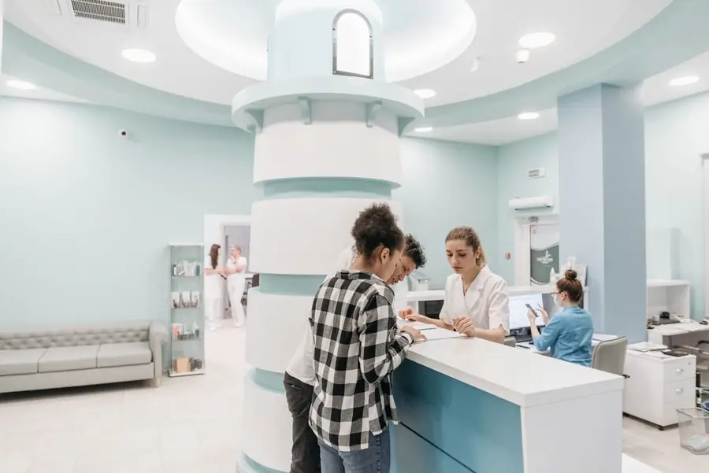
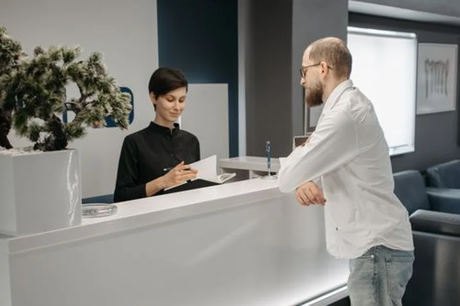
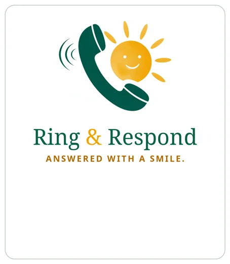

Sunny9:47 p.m.
URGENTCaller in pain. Directed to 911 / urgent care; your team alerted instantly.
AI receptionist for dental offices
Sunny answers the calls your desk can't get to — overflow, lunch, and after hours — in your practice's name. A real conversation, not voicemail.
Answered with a smile.
$199/mo for after hours · $299/mo for around the clock · $0 setup · month-to-month
Suena la segunda línea. El mostrador está lleno. Sunny ya contestó.
Sunny contesta las llamadas que su recepción no puede atender — desborde, almuerzo y fuera de horario — en nombre de su consultorio. Una conversación real, no un buzón de voz.
Answered with a smile.
$199/mes fuera de horario · $299/mes a toda hora · Instalación: $0 · mes a mes
Escuche a Sunny en vivo — llame al (619) 202-1085 Ver los planes
hung up before reaching anyone. Real patients, trying to reach you.
Patient Prism, 2025 — analysis of 11.5 million dental calls across 8,280 locations (vendor platform data).
colgaron antes de hablar con alguien. Pacientes reales, tratando de comunicarse con su consultorio. Patient Prism, 2025 — análisis de 11.5 millones de llamadas dentales en 8,280 ubicaciones (datos de la plataforma del proveedor).
Morning callback list — Your Dental PracticeReady before you open · urgencies first
URGENTCaller in pain. Directed to 911 / urgent care; your team alerted instantly.
New patientCleaning request. Called at lunch; callback before noon.
Existing patientMove Thursday's visit. Number read back digit-by-digit.
SpanishFull call in Spanish. Toothache since Sunday; first available slot.
InsuranceCarrier + exact question saved for your team to answer.
BillingExact words saved — never a guessed balance.
Owner's copy: the week's proof report — every call, every request, the urgency mix.
Sample data
Overflow, lunch, after hours. She discloses she's an AI; calls are recorded.
Name, number read back digit-by-digit, new or existing patient, preferred window.
Emergencies go to 911 / urgent care, team alerted. Urgents sit on top.
Sunny convierte cada llamada perdida en un nombre, un número y un siguiente paso — ordenado antes de que usted abra.
1. Contesta en nombre de su consultorio. Desborde, almuerzo, fuera de horario. Dice que es una IA; las llamadas se graban.
2. Captura todo correctamente. Nombre, número leído dígito por dígito, paciente nuevo o existente, horario preferido de devolución.
3. Ordena por urgencia. Las emergencias se dirigen al 911 o a urgencias y su equipo recibe una alerta. Lo urgente queda arriba.
La línea honesta: hoy Sunny no agenda citas en el horario de su consultorio y nunca toca su base de datos de pacientes. Su equipo devuelve las llamadas — con el control.
$0 setup. Month-to-month. Past the included minutes, overage is $0.25/min. Live in days, not weeks.
Nights & weekends, covered
Overflow, lunch, after hours
1,000 minutes — real minutes, not credits. Month-to-month.
The list starts booking itself
NOT SOLD TODAY
Opens when direct booking (Open Dental first) is live and proven. Current customers keep their introductory price.
Answering + insurance checks
NOT SOLD TODAY
Sold only once automated checking passes our own measured labor test.
First month up front — $199 or $299. The real plan, not a reduced trial.
Not a fit? Email hello@ringandrespond.com within 30 days — first month refunded. No conditions.
A signed Business Associate Agreement (BAA) is in place before any patient information flows to Sunny.
Protección de la información (antes de cualquier registro): La información de sus pacientes está protegida: un Acuerdo de Asociado Comercial (BAA) firmado está vigente antes de que cualquier información de pacientes llegue a Sunny.
Your hours, services, and urgent rules, set up your way.
Phones, carrier, and system stay put. Nothing ported, no hardware.
Overflow and after-hours calls come to Sunny. Your team keeps the rest.
Turn forwarding off — that's the whole cancellation process.
No porting · no hardware · no IT project
En funcionamiento en días, no en semanas. Sin portabilidad, sin equipo nuevo, sin proyecto de tecnología.
Line two rings, a patient at the counter — Sunny takes the call.
Patients call on their break — your phones uncovered. Sunny covers it.

MONDAY 8:03 A.M.The weekend lands in the first two hours — Sunny hands you one sorted list by 7:30.

5:02 P.M.Close-out must balance as the after-work wave starts — urgents flagged, rest listed.
No bench — the manager becomes the desk. Sunny holds the phones.
English · Spanish · Arabic · Farsi
The whole call, in the caller's language — capture and read-back included.
▶ Hear her live — (619) 202-1085
Inglés · Español · Árabe · Farsi
Toda la llamada, en el idioma de quien llama — captura y lectura del número incluidas.
● Live today
● Coming — not live yet
En vivo hoy: contesta en nombre de su consultorio · captura correcta de datos · orden por urgencia en 3 niveles · conversación real, con IA y grabación divulgadas · cuatro idiomas · captura de preguntas de seguros (≈12 minutos y ≈$6.52 — el costo de una verificación manual de elegibilidad, CAQH Index 2024; Sunny solo captura la pregunta) · lista matutina de devoluciones · informe de prueba para el propietario · la misma Sunny en cada ubicación.
Próximamente — aún no en vivo:
Today's calls, the callback list, the proof report, and your settings. In build at app.ringandrespond.com; your list and report reach you without it today.
Every call answered in your name, captured, and labeled by intent: book · reschedule · billing · insurance · emergency · other.
Neither phase is live today.
Las llamadas de hoy, la lista de devoluciones, el informe de prueba y su configuración. En construcción en app.ringandrespond.com; su lista y su informe le llegan sin él hoy.
Not today — Sunny captures name, number, and request; your team books, in control. Open Dental booking is coming — nothing is booked until it is live and proven.
Your patients' information is protected: a signed Business Associate Agreement (BAA) is in place before any patient information flows to Sunny — before the pilot carries real patient calls, not after.
Full conversations in English, Spanish, Arabic, and Farsi — the whole call, in the caller's language, including capture and read-back of their number.
Voicemail asks a caller to talk to a beep — and 31 of every 100 hang up instead (Patient Prism, 2025). Sunny holds a real conversation, sorts by urgency, and sends true emergencies to 911 / urgent care with an instant team alert.
Yes. Number, phones, and carrier stay put. Sunny sits behind call forwarding — overflow and after-hours — callers dial the number they know.
Yes. Month-to-month, with the pilot's unconditional money-back guarantee — email hello@ringandrespond.com within 30 days. Stopping is simpler still: turn forwarding off.
Yes. Same Sunny at every location — same capture, same urgency sorting.
Name, callback number read back digit-by-digit, new or existing patient, preferred window, and the reason. For insurance: the carrier and the exact question, word for word.
Anything else? Hear her live at (619) 202-1085.
¿Sunny agenda citas?
Hoy no — Sunny captura el nombre, el número y la solicitud; su equipo agenda, con el control. La reserva en Open Dental viene — nada se agenda hasta que esté activa y probada.
¿Cómo funcionan HIPAA y el BAA con Sunny?
La información de sus pacientes está protegida: un Acuerdo de Asociado Comercial (BAA) firmado está vigente antes de que cualquier información de pacientes llegue a Sunny — antes de que el piloto atienda llamadas reales de pacientes, no después.
¿Qué idiomas habla Sunny?
Conversaciones completas en Inglés, Español, Árabe y Farsi — toda la llamada, en el idioma de quien llama, incluida la captura y la lectura de su número.
Ya tenemos buzón de voz. ¿En qué se diferencia?
El buzón de voz pide a quien llama que hable tras un tono — y 31 de cada 100 cuelgan (Patient Prism, 2025). Sunny mantiene una conversación real, ordena por urgencia y envía las emergencias verdaderas al 911 o a urgencias, con una alerta instantánea a su equipo.
¿Conservamos nuestro número de teléfono?
Sí. El número, los teléfonos y la operadora se quedan. Sunny trabaja detrás del desvío de llamadas — desborde y fuera de horario — y quien llama marca el número que ya conoce.
¿Podemos cancelar cuando queramos?
Sí. Mes a mes, con la garantía incondicional de devolución del dinero del piloto — escriba a hello@ringandrespond.com dentro de los 30 días. Detenerlo es aún más simple: desactive el desvío.
Tenemos más de una ubicación. ¿Sunny cubre todas?
Sí. La misma Sunny en cada ubicación — la misma captura, el mismo orden por urgencia.
¿Qué captura exactamente Sunny en una llamada?
El nombre, el número de devolución leído dígito por dígito, si es paciente nuevo o existente, el horario preferido y el motivo. Para seguros: la aseguradora y la pregunta exacta, palabra por palabra.
Cualquier otra cosa: escúchela en vivo al (619) 202-1085.

Call (619) 202-1085 — Sunny, live, answering right now. Call as a patient would.
Call Sunny now: (619) 202-1085
Prefer to write? hello@ringandrespond.com
Llame al (619) 202-1085 — es Sunny, en vivo, contestando ahora mismo. Si le parece adecuada, el piloto cuesta $199 o $299 el primer mes, con instalación de $0 y garantía incondicional de devolución del dinero, y el acuerdo BAA se firma antes de que fluya cualquier información de pacientes.
(619) 202-1085 · hello@ringandrespond.com
You’re chatting with an automated assistant, not a person — California law asks us to say so plainly. For a human, email hello@ringandrespond.com or type ‘call me’ here and we’ll call you.